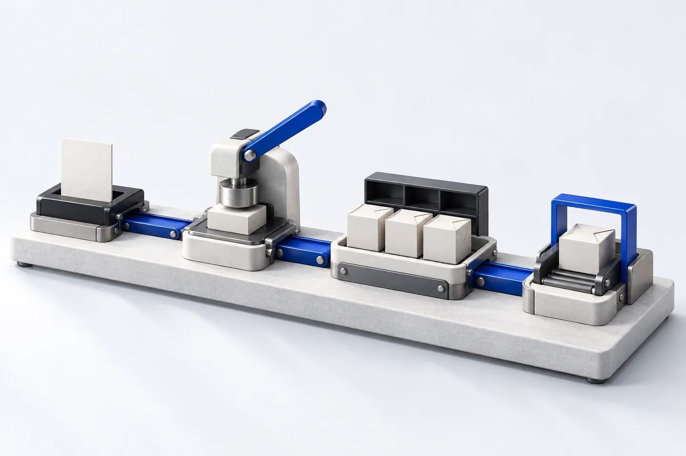
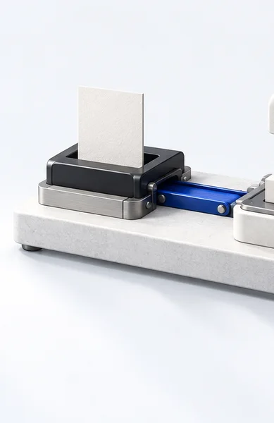
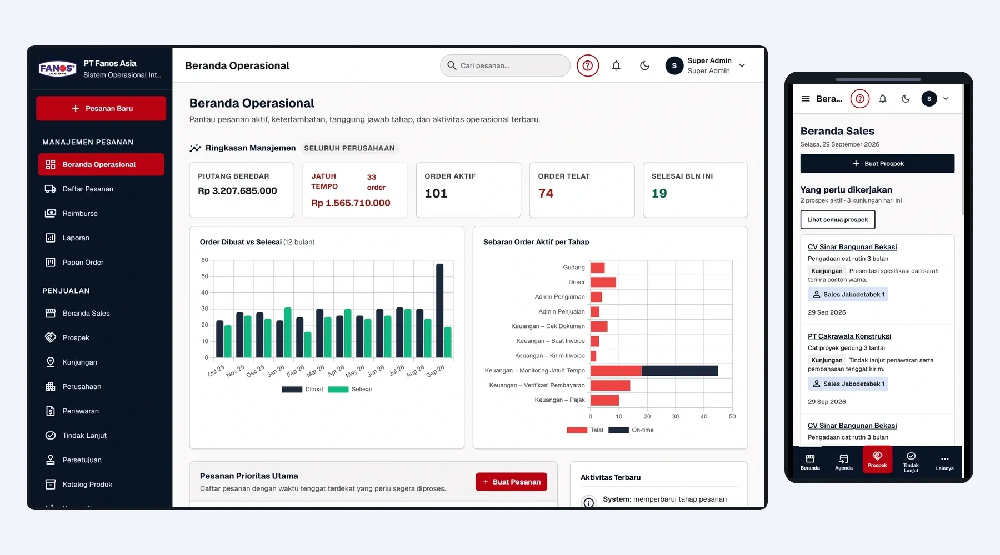

Percontohan / Internal Systems
Satu pesanan.
Satu alur.
Sales, persetujuan, gudang, dan pengiriman terhubung dalam satu sistem.
Rancangan ilustrasi, bukan screenshot aplikasi. Alur disederhanakan untuk menjelaskan layanan.


Pesanan dicatat satu kali.
Tanggung jawab dan status terlihat.
Gudang menerima pesanan yang disetujui.
Pengiriman terhubung dengan riwayat pesanan.
Bukti dari proyek
Lihat sistemnya,
bukan hanya ilustrasinya
Order & Field Sales menghubungkan tampilan kantor dengan dashboard sales di ponsel. Gambar ini memakai demo terpisah.
Buka screenshot ukuran penuh
Dari cara kerja
ke sistem yang jelas
Ilustrasi membuka penjelasan. Scope tertulis menentukan apa yang benar-benar dibangun.
- Alur dan tanggung jawab dipetakan sebelum build.
- Interface mengikuti pekerjaan setiap bagian.
- Handover mencakup aplikasi berjalan dan akses.
Tautan membuka halaman kontak lokal. Preview ini tidak mengirim formulir.